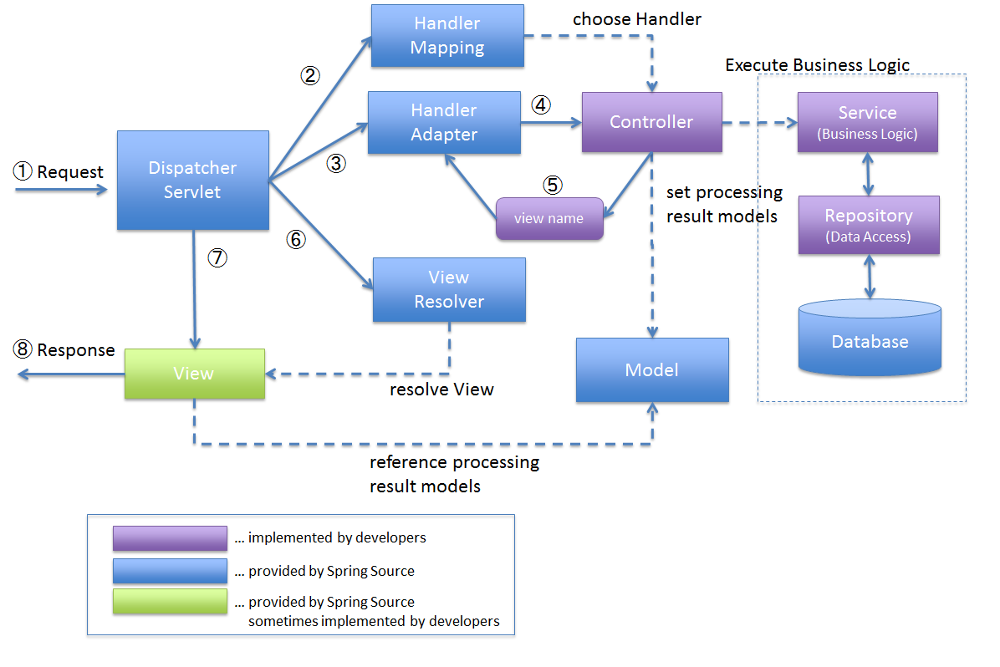

Spring Framework 3.0 Reference, 15.2 The DispatcherServlet
디스패처 서블릿을 중심에 두고 ①요청부터 ⑧응답까지 번호로 잇습니다. 파란색은 스프링이 제공하는 부분, 보라색은 개발자가 작성하는 부분으로 칠해 "무엇을 대신해 주고 무엇을 내가 쓰는지"를 한 장에 보여 줍니다.

v8의 그림 1-18이 이 방식입니다. 프런트 컨트롤러(디스패처 서블릿)가 컨트롤러에 요청을 넘기고, 컨트롤러가 만든 모델을 뷰 템플릿에 넘겨 응답을 렌더링합니다.
도입 전에는 요청마다 따로 받는 처리 코드가 인증·로깅 같은 공통 처리를 각자 반복하고, 도입 후에는 모든 요청이 하나의 입구를 거쳐 공통 처리를 한 번 한 뒤 알맞은 컨트롤러로 나뉩니다. 디스패처 서블릿이 "왜 한 곳에서 모든 요청을 받는지"를 보여 줄 때 쓰는 방식입니다. (원본 그림은 작아서 설명만 둡니다.)